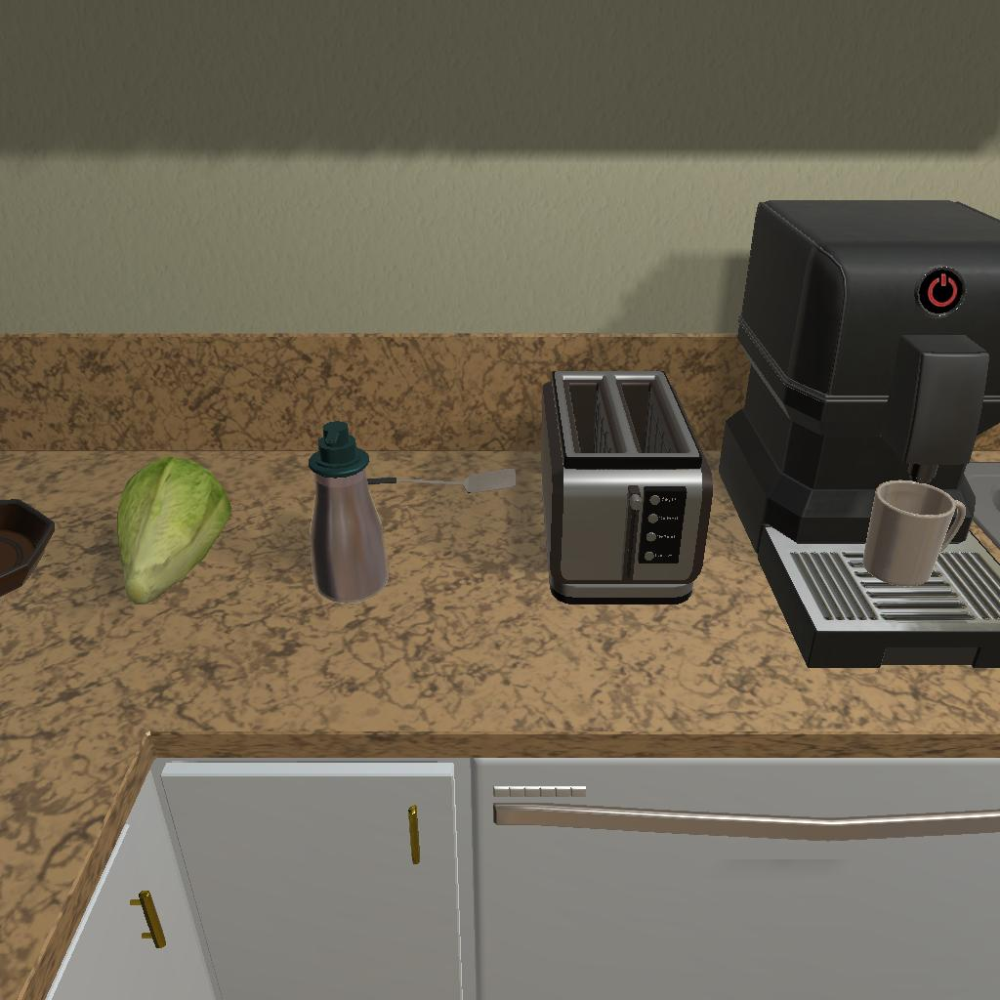

---------------------------------------------------------task: 18---------------------------------------------------------
--------------------------------------------------------------------------------------------------------------------------------------------------------------------
--------------------------------------------------------------------------------------------------------------------------------------------------------------------
Step:--------------------------------------------------------------------------18-------------------------------------------------------------------------------
----------------------------------------
VLM Prompt:
**Task**
Please perform as an embodied AI agent. Our final objective is to cool some pot and put it in cabinet. Below is the plan for completing the task, the current observation, alongside historical data and admissible actions for the next step. Please determine the best action for the next step!
**Plan**
Below is a detailed step-by-step plan to complete the task.
1. Find a pot.
2. Pick up the pot.
3. Find a fridge.
4. Cool the pot with the fridge.
5. Find a cabinet.
6. Place the cooled pot in the cabinet.
**Current Observation**
Displayed is an image capturing the current position of the agent.
**History Information**
Displayed are the previous observations with their corresponding actions.
State 1:
1. Step Index in the Plan: 1
2. Objects: Sink, Fruits, Mug, Coffee Machine
3. Action: go to fridge 1
State 2:
1. Step Index in the Plan: 3
2. Objects: Fridge
3. Action: open fridge 1
State 3:
1. Step Index in the Plan: 5
2. Objects: Fridge (with history of being opened)
3. Action: go to cabinet 1
State 4:
1. Step Index in the Plan: 6
2. Objects: Closed Cabinet
3. Action: open cabinet 1
State 5:
1. Step Index in the Plan: 6
2. Objects: Open Cabinet
3. Action: close cabinet 1
State 6:
1. Step Index in the Plan: 6
2. Objects: Closed Cabinet
3. Action: go to cabinet 3
State 7:
1. Step Index in the Plan: 6
2. Objects: Upper Cabinets (closed)
3. Action: open cabinet 3
State 8:
1. Step Index in the Plan: 7
2. Objects: Upper Cabinets (open)
3. Action: close cabinet 3
State 9:
1. Step Index in the Plan: 6
2. Objects: Closed Cabinets, Cooled Pot
3. Action: go to cabinet 4
State 10:
1. Step Index in the Plan: 6
2. Objects: Upper Closed Cabinets
3. Action: open cabinet 4
State 11:
1. Step Index in the Plan: Not provided
2. Objects: Upper Cabinets, Cabinet 4
3. Action: open cabinet 4
State 12:
1. Step Index in the Plan: Not Clearly Stated (likely a subsequent step after cooling the pot)
2. Objects: Open Upper Cabinet
3. Action: close cabinet 4
State 13:
1. Step Index in the Plan: 6
2. Objects: Upper Closed Cabinets, Cooled Pot
3. Action: go to cabinet 6
State 14:
1. Step Index in the Plan: 6
2. Objects: Upper Cabinets, Cooled Pot
3. Action: open cabinet 6
State 15:
1. Step Index in the Plan: 6
2. Objects: Upper Cabinets, Cooled Pot
3. Action: close cabinet 6
State 16:
Step Index in the Plan: Not specified, but involves placing a cooled pot in a cabinet
Objects: Upper Closed Cabinets, Cooled Pot (location unknown)
Action: go to countertop 1
State 17:
1. Step Index in the Plan: 6
2. Objects: Upper Closed Cabinets, Cooled Pot (not observed)
3. Action: go to countertop 1
State 18:
1. Step Index in the Plan: 6
2. Objects: Countertop, Lettuce, Soap Bottle, Toaster, Coffee Machine
3. Action: go to countertop 2
**Admissible Actions**
(1): go to cabinet 1
(2): go to cabinet 2
(3): go to cabinet 3
(4): go to cabinet 4
(5): go to cabinet 5
(6): go to cabinet 6
(7): go to coffeemachine 1
(8): go to cabinet 7
(9): go to toaster 1
(10): go to cabinet 8
(11): go to sink 1
(12): go to fridge 1
(13): go to microwave 1
(14): go to garbagecan 1
(15): go to cabinet 9
(16): go to cabinet 10
(17): go to countertop 2
(18): go to cabinet 11
(19): go to cabinet 12
(20): go to drawer 1
(21): go to countertop 3
(22): go to drawer 2
(23): go to cabinet 13
(24): go to sinkbasin 1
(25): go to cabinet 14
(26): go to drawer 3
(27): go to stoveburner 1
(28): go to stoveburner 2
(29): go to stoveburner 3
(30): go to cabinet 15
(31): go to stoveburner 4
(32): go to cabinet 16
(33): go to cabinet 17
(34): go to cabinet 18
(35): go to cabinet 19
(36): go to cabinet 20
(37): go to shelf 1
(38): go to shelf 2
(39): go to shelf 3
(40): take lettuce 1 from countertop 1
(41): take soapbottle 1 from countertop 1
(42): take mug 1 from countertop 1
(43): take pan 1 from countertop 1
(44): take spatul1 from countertop 1
**Analysis Guideline**
1. Analyze the history and current observation, and then determine our current step in the plan and our current place.
2. List all visible objects related to the task in the current observation, without summarizing any as "various items."
3. Analyze the objects in the current observation based on the history and the requirements for the current step, and then determine if we can complete the step with the current observation.
4. Analyze and decide on the most appropriate action to take.
5. Summarize the analysis using the following format: "Analysis: [The summarization of the analysis], The Most Appropriate Action: (i which is the integer.): [Selected action]"
**Notes**
1. We must complete each step of the plan in order and cannot skip steps when the previous ones are not finished.
2. For "Go to" actions listed as "go to xxx [n]", interpret this as there are n distinct actions available: "go to xxx 1", "go to xxx 2", ..., "go to xxx n". Select one specific action from these options instead of using "go to xxx [n]".
3. If receptacles such as drawers, cabinets, and so forth are closed in the current observation, we may try to open them.
4. Pay attention to synonyms and ensure clarity in the terms used.
5. We must determine and provide the single action which must be in the **Admissible Actions**.
6. If there is no history available, we are at the first step and the current place is "Unknown".
**Answer**
Please select the most suitable action by following the **Analysis Guideline**, keeping the above **Notes** in mind.
----------------------------------------
----------------------------------------
VLM Response:
Analysis: Based on the history information, it appears that the agent has repeatedly attempted to place the cooled pot in various cabinets but has not yet succeeded. The current step in the plan should still be step 6, "Place the cooled pot in the cabinet." The current observation shows the countertop with a lettuce, a soap bottle, a toaster, and a coffee machine, but no pot is visible. There are also closed cabinets and a fridge in view. Since the cooled pot is not observed on the countertop, we must assume it is either inside the open cabinet or has been placed elsewhere out of view. The most appropriate action would be to go to each cabinet sequentially until the cooled pot is found. The last action taken was to "go to countertop 2," which did not result in the completion of the task. Given that the agent is at the countertop and the pot is not there, the next logical step is to check the cabinets again.
The Most Appropriate Action: (1): go to cabinet 1
----------------------------------------
----------------------------------------
>>> Refine VLM Response and Get Pure Action: go to cabinet 1
----------------------------------------
-----------------------------------------------------------------
Running time: 11.952733039855957 seconds
Total Money: 0
-----------------------------------------------------------------
-----------------------------------------------------------------
Summarization Prompt:
**Context**
Analysis: Since there is no history information, we are at the first step in the plan, which is to find a statue. The current place is unknown. In the current observation, we see a floorlamp next to an armchair with a small table that has a small object on it, which could potentially be the statue we are looking for. Since the plan requires us to find a statue first and it appears there might be one on the table next to the armchair, we should investigate this object to determine if it is the statue we need.
The Most Appropriate Action: (1): go to armchair 1
**Summary**
1. Step Index in the Plan: 1
2. Objects: Floorlamp, Armchair, Small Table, Small Object (potential statue)
3. Action: go to armchair 1
**Context**
Analysis: Based on the history information, it appears that the agent has repeatedly attempted to place the cooled pot in various cabinets but has not yet succeeded. The current step in the plan should still be step 6, "Place the cooled pot in the cabinet." The current observation shows the countertop with a lettuce, a soap bottle, a toaster, and a coffee machine, but no pot is visible. There are also closed cabinets and a fridge in view. Since the cooled pot is not observed on the countertop, we must assume it is either inside the open cabinet or has been placed elsewhere out of view. The most appropriate action would be to go to each cabinet sequentially until the cooled pot is found. The last action taken was to "go to countertop 2," which did not result in the completion of the task. Given that the agent is at the countertop and the pot is not there, the next logical step is to check the cabinets again.
The Most Appropriate Action: (1): go to cabinet 1
Please summarize the context by following above examples when providing the summary, and ensure that only the summary is included, without any extra explanation.
**Summary**
-----------------------------------------------------------------
-----------------------------------------------------------------
Summarization Response:
1. Step Index in the Plan: 6
2. Objects: Lettuce, Soap Bottle, Toaster, Coffee Machine, Countertop, Cabinets (closed), Fridge
3. Action: go to cabinet 1
-----------------------------------------------------------------
-----------------------------------------------------------------
Text Observation:You arrive at loc 0. The cabinet 1 is closed.
-----------------------------------------------------------------
UNSUCCEED